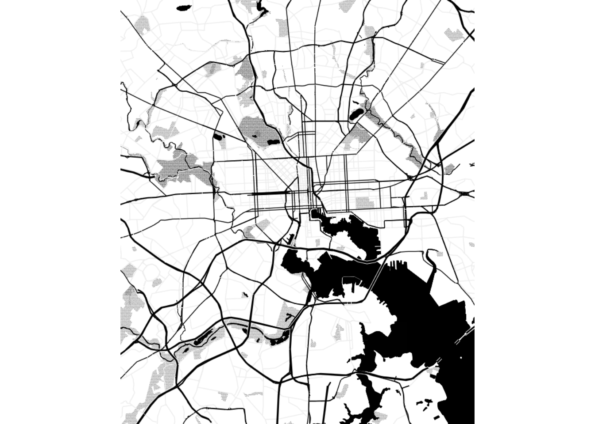
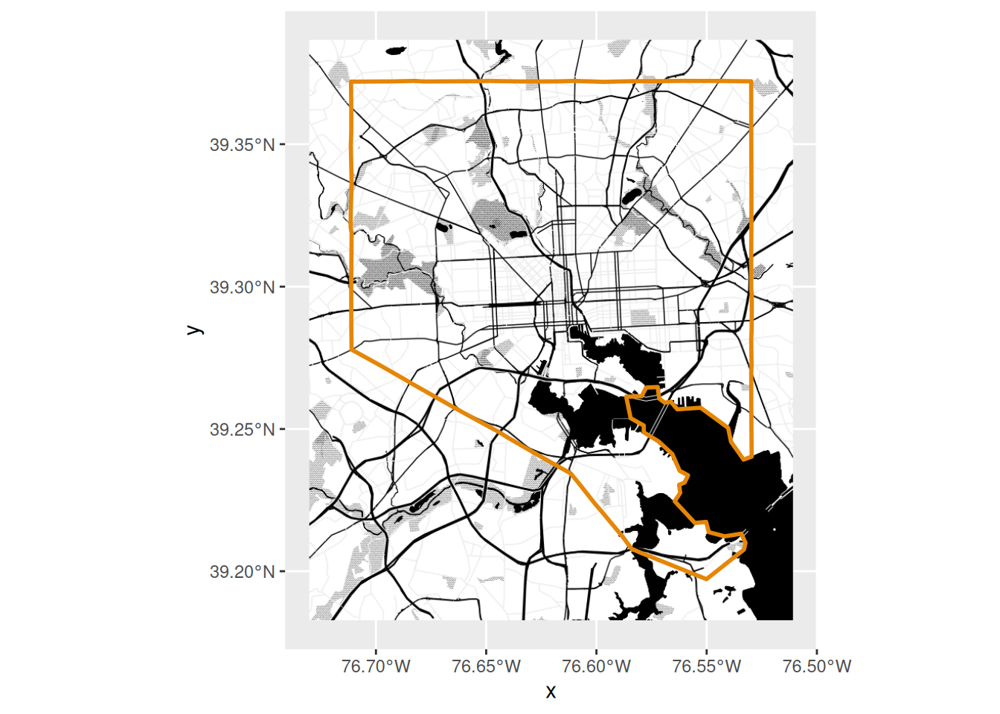
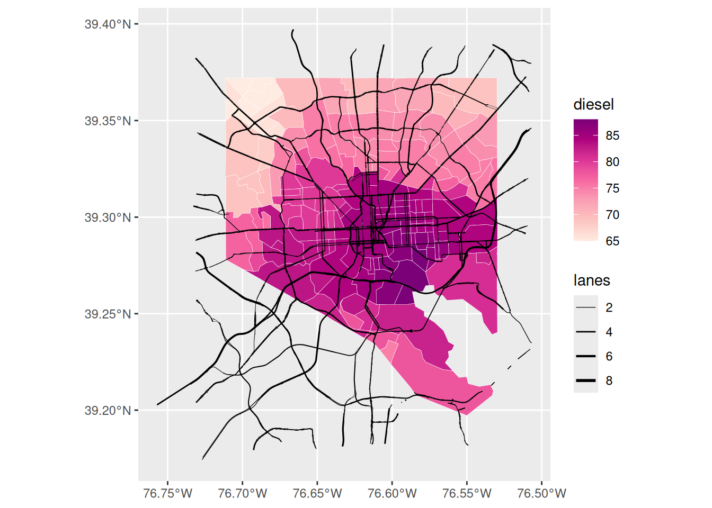
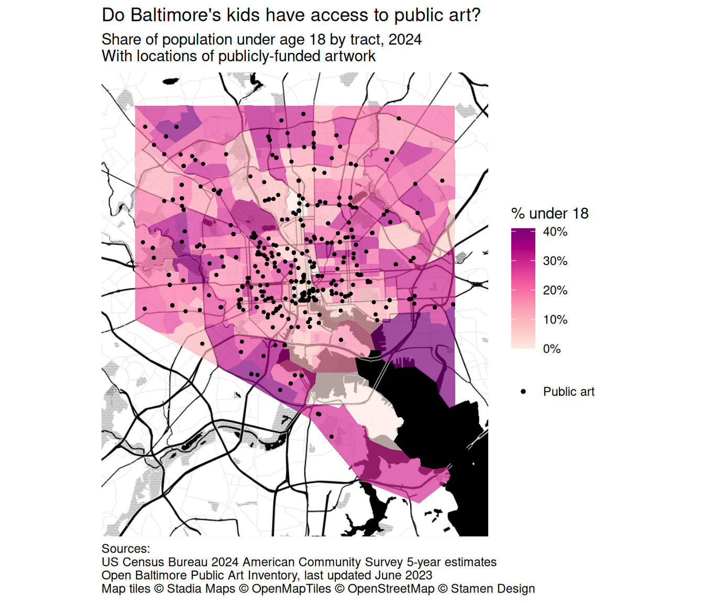

16. Putting spatial data in context
Maptile services and OpenStreetMap generally will have required attributions you need to give if you publish maps with their tools. Check the details of whichever services you use to see how to comply with this.
Basemaps
Put your map on a map. There are lots of options; Google Maps and OpenStreetMap are both very popular for map tiles, but they contain a lot of colors and symbols. For data visualization, simple grayscale or black & white basemaps work well, like the map tiles from Stamen (now distributed through Stadia) and Carto. These often require an API key.
In the past, I’ve mostly used the ggmap package, which was designed to be very easy to use with ggplot, but it doesn’t seem to be kept up to date as much and still points to several providers that are defunct. The newer basemaps package has more updated map providers, so we’ll lean towards that. Call basemaps::get_maptypes() to see them all.
Maptiles are generally in web Mercator projection, and to use them with basemaps and ggplot with other layers, you’ll need to transform your additional data to CRS 3857.
Getting and saving API keys
Many services require API keys to use. API keys can be tricky to get and store, and some, like Google Maps, require you having a credit card on file even if you only stay within the free tier. Even for a service that doesn’t seem like someone could cause any trouble with it, you want to treat your API keys like passwords—it’s a good habit to get into. Many packages that use APIs will have functions to help you save your key, and they’ll generally save to a specific environment variable. For example, tidycensus::census_api_key will save your key to the environment variable CENSUS_API_KEY, and that’s where its functions will also look for the key when you make API calls. ggmap has a function to do this for you; basemaps does not, so we’ll have to save keys ourselves.
Storing a key as an environment variable allows you to use a secret value (the key) without explicitly using it in your code. It’s common to store environment variables in a file called .Renviron, usually saved to your computer’s home directory rather than the project repo, which gets read every time you start an R session on that computer. You can edit it manually, or the function usethis::edit_r_environ also helps you find and edit this file. If you do need to store environment variables in a project, make sure that file (“.Renviron” is default for R, “.env” is common in other languages and with R as well) is listed in your .gitignore file so it stays out of git tracking.
Of the services preset in basemaps, you can use these AFAIK without a credit card:
Services that require an API key
- Maptiler
- Stadia (which now provides Stamen maps too)
- Thunderforest
Carto (recently changed to require an API key, crashed a lot of published maps including some of mine)can’t get it to accept my API key, maybe you’ll have better luck
Services that don’t require an API key
- OSM
- ESRI, surprisingly
Mapbox claims to need a billing address even though I don’t have a payment method set up. You can also add new maptile sources but I haven’t tried it yet.
# reproject and use a buffer to get some space around the city
balt_sf <- justviz::tracts_sf |>
dplyr::filter(county == "Baltimore city") |>
sf::st_transform(3857)
balt_buff <- balt_sf |>
sf::st_union() |>
sf::st_transform(2248) |>
sf::st_buffer(dist = 1 * 5280)
# back to web mercator for getting maptiles
balt_bbox_merc <- balt_buff |>
sf::st_transform(3857) |>
sf::st_bbox()
# back to latlon for osm data
balt_bbox_latlon <- balt_buff |>
sf::st_transform(4269) |>
sf::st_bbox()
# I've put this key in an envvar in ~/.Renviron
# so I don't need to expose it in my code
basemaps::basemap(
balt_bbox_merc,
map_service = "osm_stamen",
map_type = "toner_bg",
map_token = Sys.getenv("STADIA_TOKEN"),
verbose = FALSE
)
That makes a plot, but doesn’t return an object we can work with further. Other functions in the package will return ggplot- and terra-compatible objects.
[1] "ggplot2::ggplot" "ggplot" "ggplot2::gg" "S7_object"
[5] "gg" [1] "LayerInstance" "Layer" "ggproto" "gg" toner_bg_plot +
# if you find the basemap too harsh, block it out a little
# with a translucent rectangle
# annotate(xmin = -Inf, xmax = Inf, ymin = -Inf, ymax = Inf, geom = "rect", color = NA, fill = "white", alpha = 0.8) +
geom_sf(
data = sf::st_union(balt_sf),
fill = NA,
color = qual_pal[1],
linewidth = 1
)
OpenStreetMap data
OpenStreetMap is an incredible service run by an international nonprofit and many, many volunteers. They run lots of interesting projects geared towards all different types of people, not just in GIS. You can get involved in curating and editing it; this is especially important in places that might not have as much data documented or as many advocates as better-resourced areas. For example, some friends and I once had a little hackathon to help a local group that was advocating for more play spaces for kids. In a couple hours, we were able to get more parks, playgrounds, and other recreational areas (soccer fields, etc) on the map so people could find them and so the group could better understand access to fun resources for kids. It’s so cool!
Keeping servers running on limited infrastructure is hard, so sometimes the OSM servers are down or overloaded. If you get an error that says “HTTP 5xx”, where “5xx” is any number starting with 5, that means there’s a problem with the server, it’s out of your control, and you should try again later. It generally resolves pretty quickly, and has happened a few times while I wrote these notes.
OSM’s servers let you bulk download lots of data on hundreds of different things from country borders to highways to individual park benches. When you get data from it, you’ll definitely want their list of keys and location types open as a reference, and you might need to tweak your requests a bit to figure out things like the different types of highways. Once you know what you want, it’s pretty straightforward to get data with the osmdata package, which returns all your shapes as sf objects. This is how I made the set of local highways at justviz::highways_sf.
OSM data is great if you don’t want an entire basemap, or you want to customize which locations are shown. (There are paid services that will do this with basemaps, such as Mapbox and Maptiler). Let’s say we’re making a map of some of the EJSCREEN data related to air pollution, and we want to add highways and major roads but otherwise keep it pretty plain. justviz::highways_sf just has roads classified as motorways and trunks, but for looking more locally, including primary roads would also be good.
To get data for a certain set of location types, I supply a bounding box, then add a set of features to query, and then make the request to return sf objects. This will contain some combination of points, lines, polygons (and multilines and multipolygons). Also take a look at those objects—they contain tons of metadata (the highway lines have 239 columns!)
highways_osm <- readRDS(here::here("assets/highways_osm.rds"))
highway_lines <- highways_osm$osm_lines |>
dplyr::select(osm_id, name, lanes) |>
dplyr::mutate(lanes = as.numeric(lanes))
# easier to change ej_natl format first
ej_wide <- justviz::ej_natl |>
tidyr::pivot_wider(
id_cols = tract,
names_from = indicator,
values_from = value_ptile
)
ej_wide |>
# then right join with shapes
dplyr::right_join(balt_sf, by = c("tract" = "geoid")) |>
# then bring it back to an sf object
sf::st_as_sf() |>
ggplot() +
geom_sf(aes(fill = diesel), color = "white", linewidth = 0.1) +
# force a legend
geom_sf(aes(linewidth = lanes), data = highway_lines) +
scale_fill_distiller(palette = "RdPu", direction = 1) +
scale_linewidth_continuous(range = c(0.1, 1))
Here we’ve got tract boundaries from the Census Bureau, exposure to diesel from EJSCREEN, and location of highways from OSM. Combined, this shows us that the central and southeast portions of the city have relatively high potential for diesel exposure, but it doesn’t seem like that’s entirely due to highways. Knowing the city, I-95 cuts through downtown and across the southeast corner and is a major trucking route, but there’s also a lot of industrial activity in southeast Baltimore in close proximity to densely populated neighborhoods like Highlandtown. We could add industrial areas from OSM data to investigate more.
Other spatial data
Maybe you want to put other stuff on your map. If there are specific locations that provide important context, you might try adding a few essential ones (don’t overdo it). Same goes for regional boundaries, major roads, landmarks to help your reading orient themself, buffers around a location, etc. A few examples I’ve done:
- Using dashed lines to mark an area used in some analyses as a proxy for the focus region
- Using points to mark locations of jails and prisons for a map about tracts incarcerated people come from
- Adding points for bus stops for a map related to access to childcare by public transit
Putting it all together
Here’s everything: a basemap, a choropleth, and some additional shapes. We have a wrinkle, though: out of the box, basemaps::basemap_ggplot makes a plot that uses the fill aesthetic to draw the maptiles, which are just rasters. That means when you try to make a choropleth on top of it, you’ll have problems because you’re trying to use 2 different fill mappings. One way around it would be to use the ggnewscale package to assign multiple things to the fill aesthetic; another way is to get the maptiles as a terra object, which we’ve seen for mapping raster data and which doesn’t need to create a fill scale. I’ll use the second one here.
Let’s make a map that shows the child population in the city, plus public art, plus has a basemap to orient people.
# crop art_sf to just the city boundaries
balt_art <- justviz::art_sf |>
sf::st_transform(3857) |>
sf::st_filter(balt_sf)
acs_sf <- balt_sf |>
dplyr::left_join(justviz::acs, by = c("geoid" = "name"))
toner_bg_terra <- basemaps::basemap_terra(
balt_bbox_merc,
map_service = "osm_stamen",
map_type = "toner_bg",
map_token = Sys.getenv("STADIA_TOKEN"),
verbose = FALSE
)
ggplot() +
tidyterra::geom_spatraster_rgb(data = toner_bg_terra) +
geom_sf(
aes(fill = ages00_17),
data = acs_sf,
alpha = 0.7,
color = "white",
linewidth = 0
) +
geom_sf(aes(color = "Public art"), data = balt_art, size = 0.75) +
scale_fill_distiller(
palette = "RdPu",
direction = 1,
na.value = "gray70",
labels = scales::label_percent()
) +
# use a bigger dot size in legend
scale_color_manual(
values = c("Public art" = "black"),
guide = guide_legend(override.aes = list(size = 1))
) +
scale_x_continuous(expand = expansion(0)) +
scale_y_continuous(expand = expansion(0)) +
coord_sf(ndiscr = 0) +
labs(
title = "Do Baltimore's kids have access to public art?",
subtitle = "Share of population under age 18 by tract, 2024\nWith locations of publicly-funded artwork",
color = NULL,
fill = "% under 18",
caption = "Sources:\nUS Census Bureau 2024 American Community Survey 5-year estimates\nOpen Baltimore Public Art Inventory, last updated June 2023\nMap tiles © Stadia Maps © OpenMapTiles © OpenStreetMap © Stamen Design"
) +
theme(
legend.key = element_blank(),
plot.title.position = "plot",
plot.caption.position = "plot",
plot.caption = element_text(hjust = 0)
)
Here’s a good blog post going over a similar (more polished) procedure and what I used to troubleshoot this section.
Combining spatial & nonspatial visualizations
Sometimes the best context is just another chart that can show what you can’t do in a map. This might mean pairing a choropleth to show spatial patterns with a bar chart to show regional averages, or a map as a snapshot of where things are now with a line chart of how things got there.
For example, a choropleth of mobility disability rates shows the spatial pattern locally, with higher rates in East & West Baltimore but closer to the middle of the city…
cdc_wide <- justviz::cdc |>
# dplyr::filter(indicator %in% c("Current asthma", "Annual checkup")) |>
dplyr::mutate(value = value / 100) |>
tidyr::pivot_wider(
id_cols = c(level, location),
names_from = indicator,
values_from = value
) |>
janitor::clean_names()
mobility_choro <- balt_sf |>
dplyr::left_join(cdc_wide, by = c("geoid" = "location")) |>
ggplot() +
geom_sf(aes(fill = mobility_disability), color = "white", linewidth = 0.1) +
scale_fill_distiller(
palette = "RdPu",
direction = 1,
labels = scales::label_percent(),
na.value = "gray70"
) +
coord_sf(ndiscr = 0) +
labs(
fill = "% adults",
title = "Share of adults with a mobility disability, Baltimore city by tract, 2023"
) +
theme_minimal()while a bar chart contextualizes the city’s data…
mobility_bar <- cdc_wide |>
dplyr::filter(
location %in%
c(
"US",
"Maryland",
"Baltimore city",
"Baltimore County",
"Anne Arundel County",
"Howard County"
)
) |>
dplyr::mutate(
location = forcats::as_factor(location) |>
forcats::fct_reorder(mobility_disability)
) |>
ggplot(aes(
x = mobility_disability,
y = location,
fill = location == "Baltimore city"
)) +
geom_col(width = 0.8) +
scale_x_continuous(
expand = expansion(mult = c(0, 0.05)),
labels = scales::label_percent()
) +
scale_fill_manual(values = c("TRUE" = seq_pal[3], "FALSE" = "gray50")) +
theme_minimal() +
theme(legend.position = "none", axis.ticks.y = element_blank()) +
labs(
title = "Share of adults with a mobility disability by location, 2023",
x = "% adults",
y = NULL
)and a scatterplot shows how it relates to other issues.
mobility_scatter <- cdc_wide |>
dplyr::inner_join(justviz::acs, by = c("location" = "name", "level")) |>
dplyr::filter(
level == "tract",
county %in%
c(
"Baltimore city",
"Baltimore County",
"Anne Arundel County",
"Howard County"
)
) |>
# too many variables
dplyr::select(location, county, mobility_disability, no_vehicle_hh) |>
dplyr::mutate(
is_balt = forcats::as_factor(county) |>
forcats::fct_other(
keep = "Baltimore city",
other_level = "Nearby MD counties"
)
) |>
ggplot(aes(x = mobility_disability, y = no_vehicle_hh, color = is_balt)) +
geom_point(alpha = 0.6) +
scale_x_continuous(labels = scales::label_percent()) +
scale_y_continuous(labels = scales::label_percent()) +
scale_color_manual(values = c(seq_pal[4], "gray40")) +
theme_minimal() +
theme(legend.position = "bottom") +
labs(
x = "% adults with mobility disability",
y = "% households w/o vehicle",
color = NULL,
title = stringr::str_wrap(
"Share of households without a vehicle (2024) vs share of adults with a mobility disability (2023), by tract in Baltimore city & surrounding counties",
width = 75
)
)